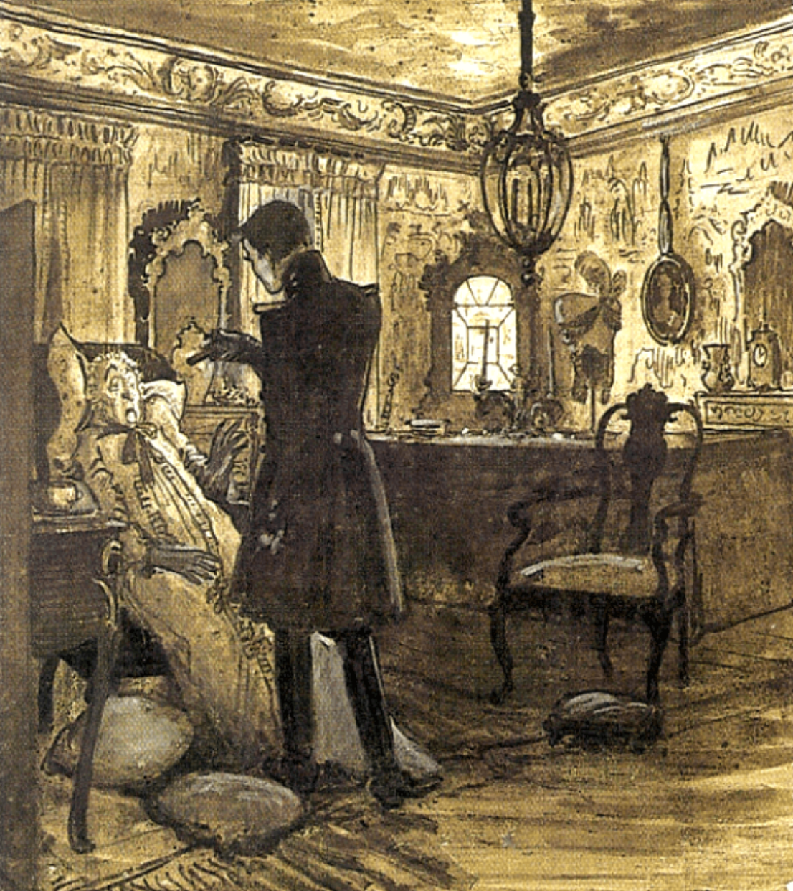

Alexander Pushkin’s The Queen of Spades (1834) is an excellent example of what Tzvetan Todorov calls the fantastic: a literary mode in which the reader—and often the protagonist—hesitates between a rational explanation of events and the possibility of the supernatural.
In Todorov’s theory, the fantastic depends not simply on the presence of ghosts, prophecies, or inexplicable events, but on sustained uncertainty about whether those events are supernatural or can be explained by natural causes.

Example from the tale.
After Hermann frightens the Countess into dying, he sees what appears to be her ghost. She reveals the winning sequence: three, seven, and ace.
This episode is central to Todorov's theory. There are two possible explanations:
- Supernatural: The dead Countess returns to reveal her secret and influence Hermann's fate.
- Psychological: Hermann's guilt, fear, and obsessive desire produce a dream, hallucination, or imagined encounter.
Pushkin does not entirely eliminate either possibility. The reader must decide how much credibility to grant Hermann's experience and the narrator's presentation of it.